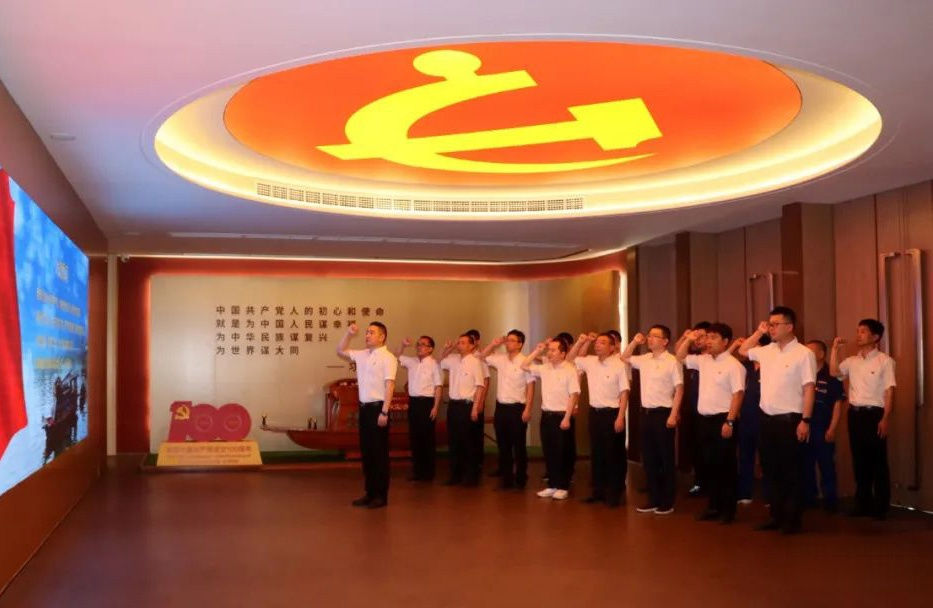

Warmly Celebrating
the 100th Anniversary of the Founding of the Communist Party of China
1921--2021
As the CPC approaches its centenary, مجموعة KIWL Limited held a series of July 1 themed activities to celebrate the Party's hundred-year journey and amplify the voice of the private economy in the new era.

Honor Our Commitment, Keep Our Oath
"Let us review the oath of joining the Party together. Please raise your right hand and face the Party flag." On the morning of June 26, resounding oaths echoed in KIWL's Party History School. Led by Party Branch Secretary and Chairman Jiang Wei, Party members reviewed their solemn pledges.
At the meeting, Secretary Jiang Wei presented Party badges and copies of the Party Constitution to three new members in 2021. All members also watched the People's Daily micro-video "I Swear" to revisit the original aspirations of revolutionary predecessors.
Study Party History, Apply Ideas, Deliver Results, Break New Ground
Since the start of 2021, through study of books such as "On the History of the Communist Party of China" and Party lectures by branch secretaries, KIWL's Party organization has used its Party History School to deliver profound education on Party history and ideals. In the first half of the year, production continued to grow, with May output up 38.5% year-on-year and exceeding 70,000 units for the first time. Party members played a vanguard role in driving performance.
Party Building Guides Strategic Development — Building the KIWL Dream and نواة الصين
KIWL continuously improves Party building to guide high-quality development, focusing on intelligent manufacturing innovation, breakthroughs in key core technologies, and building a نواة الصين for national heavy equipment.
The company adheres to the principle of the Party nurturing talent, developing activists and members among technical staff, managers, and skilled workers, and building talent teams such as IE engineers and KIWL master craftsmen through its "Family Culture," "Craftsmanship Spirit," and "Lu Ban Day" apprenticeship programs.
Carry Forward Party History Spirit, Pass On Red Culture
In recent years, KIWL has built the Party History School and pioneered the cultural strategy of "Study Party History, Build a Century-Old KIWL," using red culture as the core of corporate culture. Party history education has been expanded to all employees, including new hire training with assessment, laying a solid ideological foundation for the long-term cultural strategy.